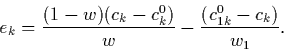
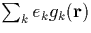
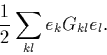

Self-consistency involves redistribution of charge throughout the cluster until a minimum energy is reached, thereby hopefully producing an accurate simulation of the charge distribution in an equivalent real system. This equilibrium distribution of charge for a given set of atomic coordinates is achieved by iteratively solving the Kohn-Sham equations until the charge density distribution produced by the Kohn-Sham orbitals gives the same potential that was used to generate it.
In order to achieve this, a first guess set of charge density coefficients, ck and dk,s are required; initially we take these from the neutral atom cases but during structural optimisation they are taken from the result of the previous iteration. The Kohn-Sham equations are then solved to determine the density matrix, bij,s, which is then used to produce a set of output charge density coefficients, ck0, dk,s0 (Equations 3.2.10 and 3.2.19).
The next choice of charge density coefficients are formed from a weighted combination of the previous two, i.e.
| c'k = ck + w (c0k - ck). | (38) |
The choice of weighting factor, w, is important. If we solve once for a particular value of w (`w1') giving a specific charge density c01k, then the deviation from self-consistency of ck is given by
|  | (39) |
This ek can be used to form a pseudo-charge density,  which has a corresponding electrostatic energy,
|  | (40) |
w is then chosen by minimising this energy. In practise this can be generalised to include the coefficients from all of the previous iterations, and the cycle converges exponentially, normally in only a few iterations (six or so).